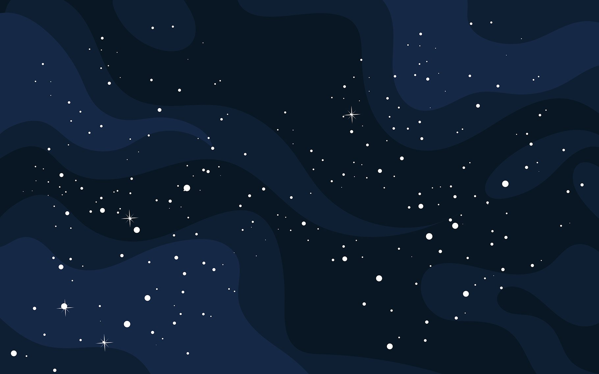
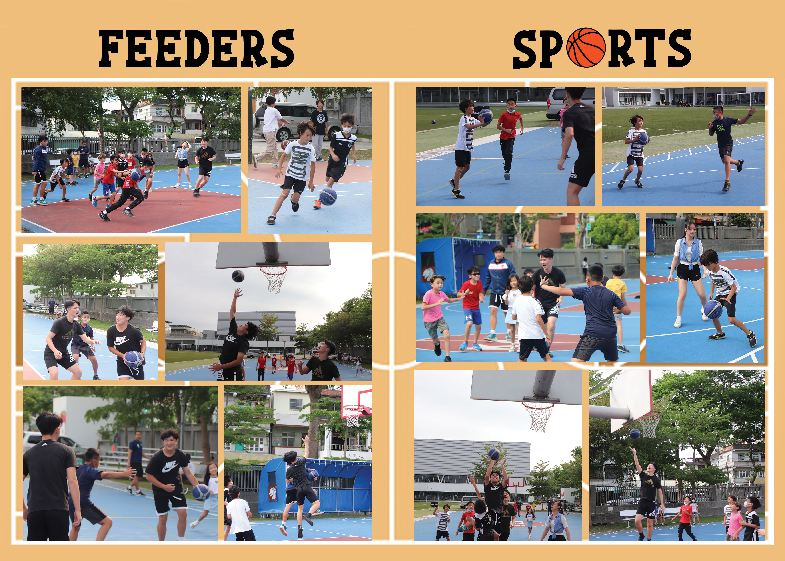
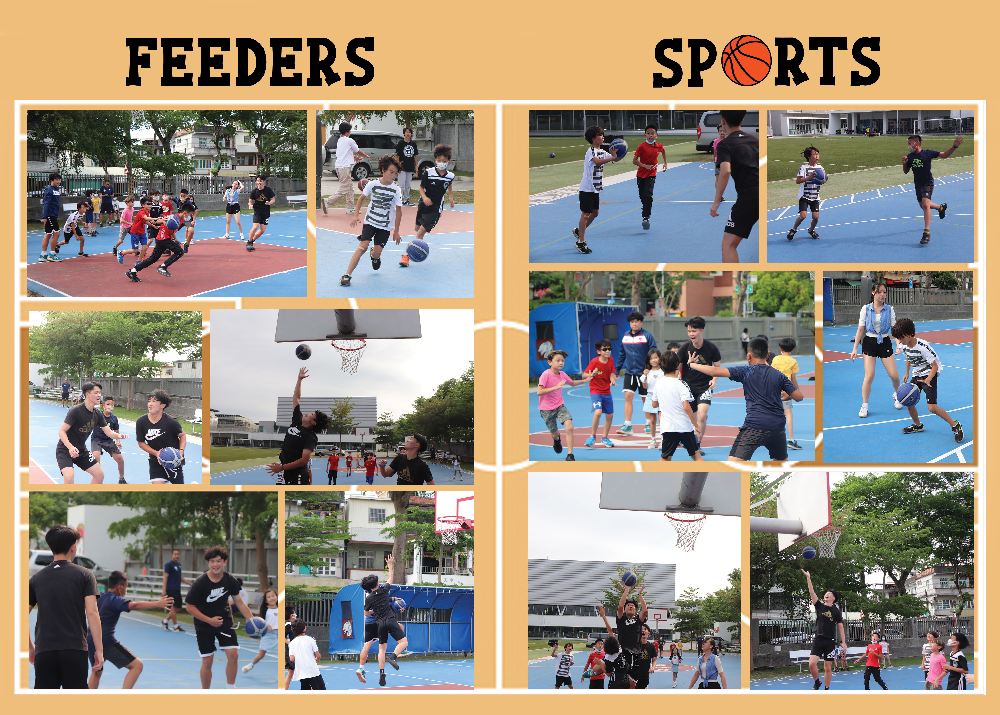
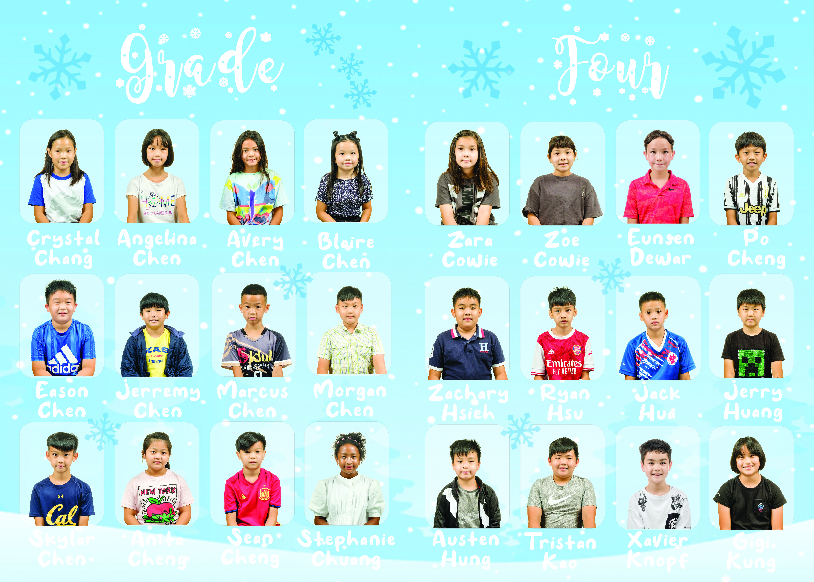
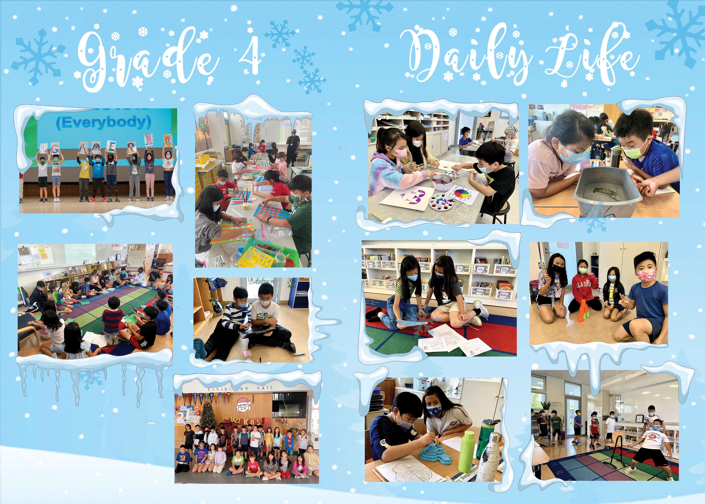
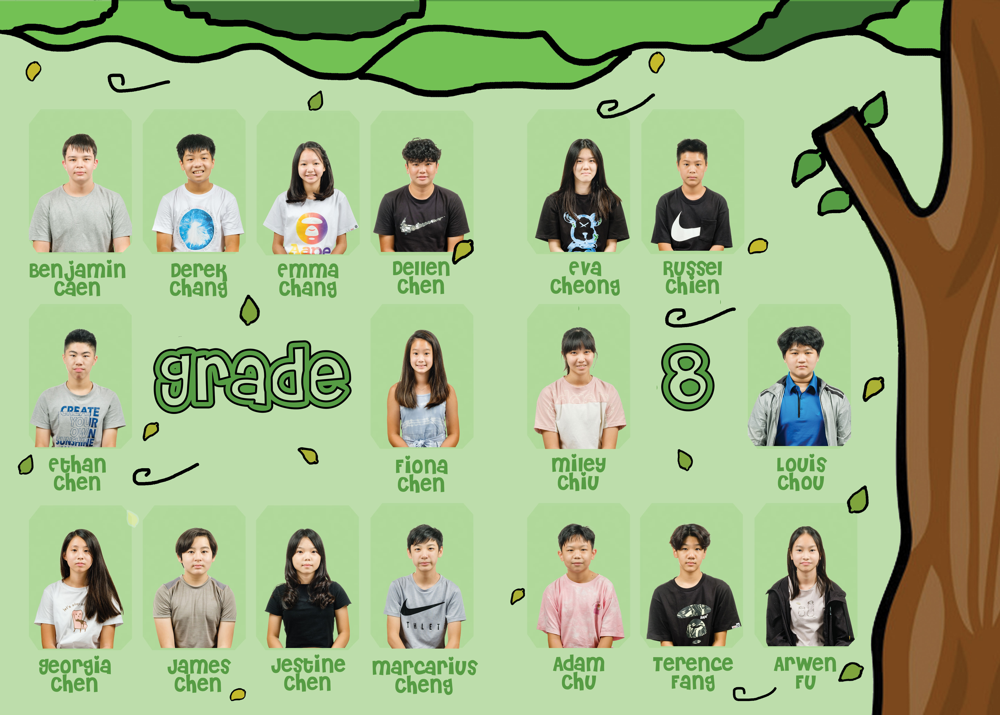

The following designs are from my yearbook design works from Digital Media in Grade 10:
Feeders Sports
This is the elementary basketball sports page. Given that the theme of most of the images included in the design was themed around the sport of basketball, I included elements that conveyed exactly that theme, including the background image as a basketball court, along with the "o" in "sports" using a basketball. Furthermore, the text font of the title is also chosen as a Varsity/Sports font. This font creates an immediate impression on the audience that the design is about sports. As for images chosen for the design, images were cropped and framed to where the action was at. The entire page is filled with mostly images, given that it is the images that are more important, rather than the actual design of the yearbook. Here, a simplistic background is used to contrast the many images, so as to make sure the the design is not too busy.
 


Grade 4 Mugshots
Here, in the Grade 4 Mugshots page, I decided to implement the "snow" theme. To begin with, the background is a forest behind a little pile of snow, while snowing. This layer is put at the very bottom so as to not cover the students or the other elements. Then, in order to help students stand out from the back ground, a white frame with an opacity of 30% was used. To further stress the snow theme, snowflakes were added althroughout the page, and fonts were purposely chosen to fit the theme. One of the fonts here is "like snow," and it is shaped exactly like snow. The title font here is used to make the entire design stand out. Moreover, occasional snowflakes have been overlapped over the picture frames of the students to create a 3D effect and to enhance the presence of the theme.

Grade 4 Daily Life
In the Kindergarten Space Themed Mugshot page, a variety of space/astronomy-related elements were included,such as sci-fi ones such as U.F.Os, as well as other tangible and non-fictional ones, such as stars, moons, rockets, and various planets. Such elements provided the design with personality and context for the theme: Space. Furthermore, these elements were also used to overlap the frames of various student mugshots in order to create a 3D effect. This may create the visual illusion/effect that students are actually connected and engaged with the theme, rather than the theme being merely the background. As for the font, the font was purposefully chosen as "SpaceOut." This theme included stars, which matched the theme, whilst maintaining a cartoonish look---the look other various other elements have as well. Moreover, the font comes in two different styles: Normal, and Bold. Here, this makes the design more coherent and consistent: the font of the title matches with the font of the names of the students.

Kindergarten Mugshots
In the Kindergarten Space Themed Mugshot page, a variety of space/astronomy-related elements were included,such as sci-fi ones such as U.F.Os, as well as other tangible and non-fictional ones, such as stars, moons, rockets, and various planets. Such elements provided the design with personality and context for the theme: Space. Furthermore, these elements were also used to overlap the frames of various student mugshots in order to create a 3D effect. This may create the visual illusion/effect that students are actually connected and engaged with the theme, rather than the theme being merely the background. As for the font, the font was purposefully chosen as "SpaceOut." This theme included stars, which matched the theme, whilst maintaining a cartoonish look---the look other various other elements have as well. Moreover, the font comes in two different styles: Normal, and Bold. Here, this makes the design more coherent and consistent: the font of the title matches with the font of the names of the students.

Grade 8 Mugshots
In the tree theme, I leverage a number of different tones of green in order to achieve a "tree" and "nature" theme, whilst making sure that the colors came in a variety as well. On the very right, the brown bark of the tree trunk is the most eye catching: it conveys that the theme is about tree and nature. As the tree spans throughout the margins of the entire page, wind elements (squggly, whirrled lines) can be seen blowing both yellow, light green, and green leaves off the tree. These leaves are spread out across the pages, and occasionally even overlaps with students' mugshots, creating an immersive and natural effect. Furthermore, the title "grade 8" is centered in the very ceter of both pages, bold with green, using a "Blending Option: Stroke" to ehance the emphasis of such a title. All in all, the tree theme is very clear in conveying its themes: grade 8, trees, nature.

Personal Project Exhibition
The "Personal Project Design" theme is very open, clear, and creative, given that the personal project is a freelance option for students to choose their own topics. As such, I utilized exactly that "creativity" in order to create a design: with a background created using shapes. For the personal project background and theme, the design consists of various geometric shapes, including circles, triangles, diamonds, lines, octagons, and much more. Here, the geometric shapes and the series of yellow, pink, and blue colors symbolizes and demonstrates creativing. The personal project title is prominent in the page, given that it is vital to attend that context: it may be quite confusing without it. Combined with opacity techniques, shapes of different colors were overlapped over images to create a layering effect, whilst text throughout the design utilized strokes so as to allow texts to pop out and to seem more eyecatching and prominent throughout the entire design.